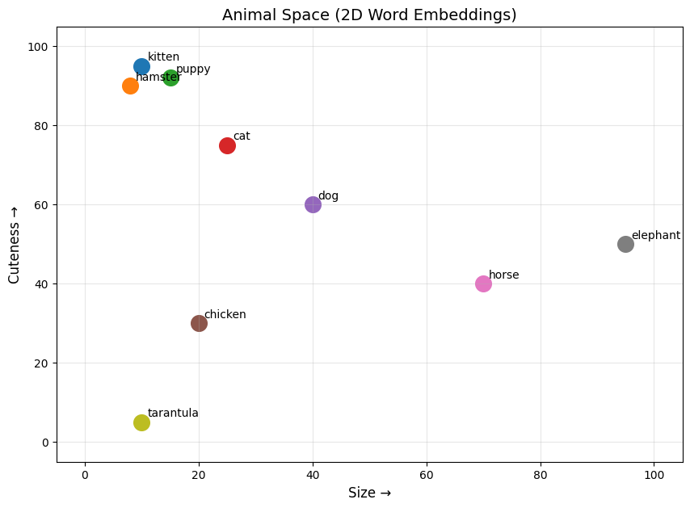
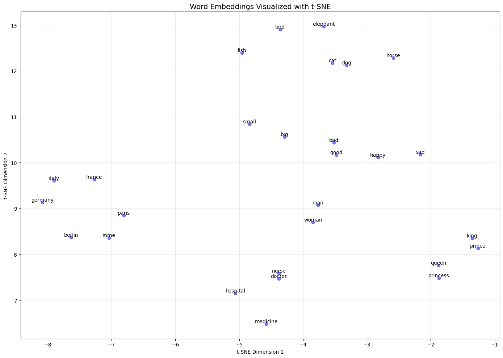

Word2Vec: Fundamentals and Practical Applications#
Deep Learning Course
In this notebook, we explore Word2Vec from a practical perspective. We’ll learn:
What word embeddings are and why we need them
The Skip-gram and CBOW architectures
How to use pre-trained word vectors
Vector arithmetic and analogies (king - man + woman = queen)
Finding similar words and odd-one-out detection
1.1 Introduction to Word Embeddings#
The Problem with Traditional Text Representation#
In natural language processing (NLP), we need to represent words in a way that computers can process. The simplest approach is one-hot encoding, where each word in the vocabulary is represented by a vector with a single 1 and all other values 0.
import numpy as np
vocab = ["cat", "dog", "fish", "bird"]
word_to_idx = {word: idx for idx, word in enumerate(vocab)}
def one_hot(word):
vec = np.zeros(len(vocab))
vec[word_to_idx[word]] = 1
return vec
print("One-hot for 'cat':", one_hot("cat"))
print("One-hot for 'dog':", one_hot("dog"))
One-hot for 'cat': [1. 0. 0. 0.]
One-hot for 'dog': [0. 1. 0. 0.]
Problems with One-Hot Encoding:
High Dimensionality: For a vocabulary of 100,000 words, each vector has 100,000 dimensions
No Semantic Information: The angle between “cat” and “dog” is the same as “cat” and “refrigerator”
Sparse Vectors: Almost all values are zero, leading to inefficient computation
The Solution: Dense Word Embeddings#
Word embeddings solve these problems by representing each word as a dense vector (typically 100-300 dimensions) where semantically similar words have similar vectors.
cat → [0.23, -0.45, 0.67, ..., 0.12] (300 dimensions)
dog → [0.25, -0.42, 0.65, ..., 0.15] (300 dimensions)
refrigerator → [-0.89, 0.34, -0.12, ..., -0.56]
Now, the vectors for “cat” and “dog” are close together, while “refrigerator” is far away!
The Distributional Hypothesis#
The foundation of word embeddings is the Distributional Hypothesis, first articulated by linguist J.R. Firth in 1957:
“You shall know a word by the company it keeps.”
This means that words appearing in similar contexts tend to have similar meanings. For example:
"The ___ chased the mouse." → cat, dog, fox
"The ___ barked at the mailman." → dog, puppy, hound
"The ___ soared through the sky." → eagle, hawk, bird
Intuitive Example: Animal Space#
Let’s build an intuitive understanding by creating a simple 2D “animal space” based on two characteristics: cuteness and size (both on a scale of 0-100).
import matplotlib.pyplot as plt
animals = {
'kitten': [95, 10],
'hamster': [90, 8],
'puppy': [92, 15],
'cat': [75, 25],
'dog': [60, 40],
'chicken': [30, 20],
'horse': [40, 70],
'elephant': [50, 95],
'tarantula': [5, 10]
}
# Plot animals
fig, ax = plt.subplots(figsize=(10, 7))
for animal, (cute, size) in animals.items():
ax.scatter(size, cute, s=200)
ax.annotate(animal, (size, cute), xytext=(5, 5), textcoords='offset points')
ax.set_xlabel('Size →', fontsize=12)
ax.set_ylabel('Cuteness →', fontsize=12)
ax.set_title('Animal Space (2D Word Embeddings)', fontsize=14)
ax.set_xlim(-5, 105)
ax.set_ylim(-5, 105)
ax.grid(True, alpha=0.3)
plt.show()

In this 2D space:
Kitten and hamster are close (both small and cute)
Elephant is isolated (very large, moderately cute)
Horse is between small and large animals
Vector Operations Reveal Semantic Relationships#
The power of word embeddings comes from vector arithmetic. Consider the relationship between “tarantula” and “hamster”.
def vector_add(v1, v2):
return [v1[i] + v2[i] for i in range(len(v1))]
def vector_sub(v1, v2):
return [v1[i] - v2[i] for i in range(len(v1))]
def euclidean_distance(v1, v2):
return sum((a - b) ** 2 for a, b in zip(v1, v2)) ** 0.5
# The "cuteness boost" vector (hamster - tarantula)
cuteness_boost = vector_sub(animals['hamster'], animals['tarantula'])
print("Cuteness boost vector (hamster - tarantula):", cuteness_boost)
# Apply to chicken
chicken_plus_cute = vector_add(animals['chicken'], cuteness_boost)
print("Chicken + cuteness boost:", chicken_plus_cute)
# Find closest animal
def find_closest(target, exclude=[]):
best = None
best_dist = float('inf')
for animal, vec in animals.items():
if animal in exclude:
continue
dist = euclidean_distance(target, vec)
if dist < best_dist:
best_dist = dist
best = animal
return best
result = find_closest(chicken_plus_cute, exclude=['chicken'])
print(f"\nChicken + cuteness_boost ≈ {result}")
Cuteness boost vector (hamster - tarantula): [85, -2]
Chicken + cuteness boost: [115, 18]
Chicken + cuteness_boost ≈ kitten
This demonstrates the key insight: vector operations can capture semantic relationships!
The “cuteness boost” vector captures the concept “cute but similar size.” Applying it to chicken gives us puppy!
1.2 Word2Vec Models Overview#
The Core Idea#
Word2Vec, introduced by Mikolov et al. in 2013, learns word embeddings by training a simple neural network on a large corpus. The network has a specific task: predict context words from center words (or vice versa).
The genius of Word2Vec is that we don’t actually care about this prediction task—we only want the learned word representations (the weights) as a side product!
Two Architectures#
Skip-gram Model#
Task: Given a center word, predict the surrounding context words.
Input: "The cat sat on the mat"
Center word: "sat"
Context window (size=2): ["cat", "on", "the", "the"]
Skip-gram generates training pairs:
(sat, cat), (sat, on), (sat, the), (sat, the)
┌─────────────────┐
│ sat (input) │
└────────┬────────┘
│
▼
┌─────────────────┐
│ Hidden Layer │ ← Word Embedding (what we want!)
│ (no activation)│
└────────┬────────┘
│
▼
┌─────────────────┐
│ Output Layer │
│ (Softmax) │
└────────┬────────┘
│
▼
Predict: [cat, on, the, the, ...]
Continuous Bag of Words (CBOW) Model#
Task: Given context words, predict the center word.
Input context: ["cat", "on", "the", "the"]
Target: "sat"
┌─────────────────────────────────────┐
│ Context: [cat, on, the, the] │
└─────────────────┬───────────────────┘
│
▼
┌─────────────────┐
│ Hidden Layer │ ← Word Embedding (what we want!)
│ (Average) │
└────────┬────────┘
│
▼
┌─────────────────┐
│ Output Layer │
│ (Softmax) │
└────────┬────────┘
│
▼
Predict: "sat"
Key Hyperparameters#
Parameter |
Description |
Typical Values |
|---|---|---|
|
Number of context words on each side |
5-10 |
|
Dimensionality of embeddings |
100-300 |
|
Minimum word frequency to include |
5-50 |
|
Number of training iterations |
5-20 |
|
0 for CBOW, 1 for Skip-gram |
0 or 1 |
Skip-gram vs. CBOW Comparison#
Aspect |
Skip-gram |
CBOW |
|---|---|---|
Training |
Slower |
Faster |
Performance on rare words |
Better |
Worse |
Needs more data |
No |
Yes |
Preferred for |
Small datasets |
Large datasets |
1.3 Practical Examples with Pre-trained Models#
Loading Pre-trained Word Vectors#
We’ll use Gensim to load pre-trained word vectors. First, install the required package:
# Install gensim (run once)
# !pip install gensim
import numpy as np
import gensim.downloader as api
c:\Users\m.amintoosi\.conda\envs\pth-gpu\lib\site-packages\google\api_core\_python_version_support.py:263: FutureWarning: You are using a Python version (3.10.16) which Google will stop supporting in new releases of google.api_core once it reaches its end of life (2026-10-04). Please upgrade to the latest Python version, or at least Python 3.11, to continue receiving updates for google.api_core past that date.
warnings.warn(message, FutureWarning)
# Load pre-trained GloVe vectors (100-dimensional, trained on Wikipedia)
# This will download the model on first run (~128 MB)
print("Loading pre-trained word vectors...")
model = api.load("glove-wiki-gigaword-100")
print(f"Loaded {len(model.key_to_index):,} word vectors")
Loading pre-trained word vectors...
[==================================================] 100.0% 128.1/128.1MB downloaded
Loaded 400,000 word vectors
# Examine a word vector
print(f"Vector for 'king' (first 10 dimensions): {model['king'][:10]}")
print(f"Vector shape: {model['king'].shape}")
Vector for 'king' (first 10 dimensions): [-0.32307 -0.87616 0.21977 0.25268 0.22976 0.7388 -0.37954 -0.35307
-0.84369 -1.1113 ]
Vector shape: (100,)
Finding Similar Words#
# Find the 10 most similar words to "king"
similar_to_king = model.most_similar("king", topn=10)
print("Words most similar to 'king':")
for word, similarity in similar_to_king:
print(f" {word:15} → {similarity:.4f}")
Words most similar to 'king':
prince → 0.7682
queen → 0.7508
son → 0.7021
brother → 0.6986
monarch → 0.6978
throne → 0.6920
kingdom → 0.6811
father → 0.6802
emperor → 0.6713
ii → 0.6676
# Try with other words
for query_word in ["computer", "beautiful", "iran", "tehran"]:
if query_word in model.key_to_index:
print(f"\nWords similar to '{query_word}':")
for word, sim in model.most_similar(query_word, topn=5):
print(f" {word:15} {sim:.4f}")
else:
print(f"'{query_word}' not in vocabulary")
Words similar to 'computer':
computers 0.8752
software 0.8373
technology 0.7642
pc 0.7366
hardware 0.7290
Words similar to 'beautiful':
lovely 0.8909
gorgeous 0.8722
wonderful 0.8081
charming 0.7719
magnificent 0.7332
Words similar to 'iran':
tehran 0.8503
iranian 0.7911
syria 0.7800
iraq 0.7679
nuclear 0.7258
Words similar to 'tehran':
iran 0.8503
iranian 0.7557
pyongyang 0.7014
ahmadinejad 0.6929
moscow 0.6898
The Famous Analogy: King - Man + Woman = Queen#
This is the most famous example of word vector arithmetic. The idea is:
If we take the concept of “king,” remove the “maleness,” and add “femaleness,” we should get “queen.”
# The classic analogy: king - man + woman = ?
result = model.most_similar(positive=['king', 'woman'], negative=['man'], topn=10)
print("king - man + woman = ?")
print("-" * 40)
for word, similarity in result:
print(f" {word:15} → {similarity:.4f}")
king - man + woman = ?
----------------------------------------
queen → 0.7699
monarch → 0.6843
throne → 0.6756
daughter → 0.6595
princess → 0.6521
prince → 0.6517
elizabeth → 0.6465
mother → 0.6312
emperor → 0.6106
wife → 0.6099
Queen is the top result! The vector arithmetic successfully captures the gender relationship.
Understanding the Math Behind Analogies#
def explain_analogy(word_a, word_b, word_c, model):
"""
Analogy: word_a is to word_b as word_c is to ?
Mathematically: ? ≈ word_b - word_a + word_c
"""
# Get vectors
vec_a = model[word_a]
vec_b = model[word_b]
vec_c = model[word_c]
# Compute the target vector
target_vec = vec_b - vec_a + vec_c
# Find closest words
results = model.most_similar(positive=[word_b, word_c], negative=[word_a], topn=5)
print(f"Analogy: {word_a} is to {word_b} as {word_c} is to ?")
print(f"\nMathematical operation:")
print(f" target = {word_b} - {word_a} + {word_c}")
print(f" target = {vec_b[:3]}... - {vec_a[:3]}... + {vec_c[:3]}...")
print(f" target = {target_vec[:3]}...")
print(f"\nTop predictions:")
for word, sim in results:
print(f" {word}: {sim:.4f}")
return results
# Run the explanation
explain_analogy("man", "king", "woman", model)
Analogy: man is to king as woman is to ?
Mathematical operation:
target = king - man + woman
target = [-0.32307 -0.87616 0.21977]... - [0.37293 0.38503 0.71086]... + [0.59368 0.44825 0.5932 ]...
target = [-0.10231996 -0.81294006 0.10211003]...
Top predictions:
queen: 0.7699
monarch: 0.6843
throne: 0.6756
daughter: 0.6595
princess: 0.6521
[('queen', 0.7698540687561035),
('monarch', 0.6843381524085999),
('throne', 0.6755736470222473),
('daughter', 0.6594556570053101),
('princess', 0.6520534157752991)]
More Analogy Examples#
def run_analogy(positive, negative, topn=5):
"""Helper function to run analogies."""
results = model.most_similar(positive=positive, negative=negative, topn=topn)
formula = " + ".join(positive)
if negative:
formula += " - " + " - ".join(negative)
print(f"{formula} = ?")
for word, sim in results:
print(f" {word}: {sim:.4f}")
print()
# Geographic analogies
print("=" * 50)
print("GEOGRAPHIC ANALOGIES")
print("=" * 50)
run_analogy(['paris', 'japan'], ['france'])
run_analogy(['tehran', 'germany'], ['iran'])
# Grammatical analogies
print("=" * 50)
print("GRAMMATICAL ANALOGIES")
print("=" * 50)
run_analogy(['walking', 'swim'], ['walk'])
run_analogy(['mice', 'dog'], ['mouse'])
# Semantic analogies
print("=" * 50)
print("SEMANTIC ANALOGIES")
print("=" * 50)
run_analogy(['summer', 'cold'], ['winter'])
run_analogy(['doctor', 'law'], ['hospital'])
==================================================
GEOGRAPHIC ANALOGIES
==================================================
paris + japan - france = ?
tokyo: 0.8994
osaka: 0.7421
japanese: 0.7059
seoul: 0.6949
shanghai: 0.6679
tehran + germany - iran = ?
berlin: 0.8361
munich: 0.7773
frankfurt: 0.7377
cologne: 0.7185
hamburg: 0.7169
==================================================
GRAMMATICAL ANALOGIES
==================================================
walking + swim - walk = ?
swimming: 0.8009
surfing: 0.6603
swam: 0.6448
rowing: 0.6413
jogging: 0.6376
mice + dog - mouse = ?
dogs: 0.8048
rats: 0.7038
cats: 0.6896
animals: 0.6468
horses: 0.6444
==================================================
SEMANTIC ANALOGIES
==================================================
summer + cold - winter = ?
hot: 0.7388
cool: 0.6947
warm: 0.6855
days: 0.6771
turned: 0.6674
doctor + law - hospital = ?
laws: 0.7347
subject: 0.6480
statute: 0.6445
rules: 0.6442
legal: 0.6344
Finding the Odd One Out#
# Find the word that doesn't belong
words_list1 = ["breakfast", "cereal", "dinner", "lunch"]
words_list2 = ["dog", "cat", "car", "fish"]
words_list3 = ["apple", "orange", "banana", "car"]
print("Which word doesn't belong?")
print(f" {words_list1} → {model.doesnt_match(words_list1)}")
print(f" {words_list2} → {model.doesnt_match(words_list2)}")
print(f" {words_list3} → {model.doesnt_match(words_list3)}")
Which word doesn't belong?
['breakfast', 'cereal', 'dinner', 'lunch'] → cereal
['dog', 'cat', 'car', 'fish'] → car
['apple', 'orange', 'banana', 'car'] → car
Computing Similarity Scores#
# Compute similarity between word pairs
word_pairs = [
("king", "queen"),
("king", "man"),
("king", "apple"),
("dog", "puppy"),
("dog", "cat"),
("happy", "sad"),
("fast", "quick"),
("big", "small"),
]
print("Word Pair Similarities:")
print("-" * 45)
for w1, w2 in word_pairs:
sim = model.similarity(w1, w2)
print(f" {w1:10} ↔ {w2:10} : {sim:.4f}")
Word Pair Similarities:
---------------------------------------------
king ↔ queen : 0.7508
king ↔ man : 0.5119
king ↔ apple : 0.2668
dog ↔ puppy : 0.7236
dog ↔ cat : 0.8798
happy ↔ sad : 0.6801
fast ↔ quick : 0.7107
big ↔ small : 0.7180
Interesting observation: Antonyms like “big” and “small” often have high similarity because they appear in similar contexts (e.g., “How big/small is it?”). This shows that word embeddings capture distributional similarity, not necessarily semantic similarity in the traditional sense.
Simple Query: “Capital of Iran”#
# Find the capital of Iran
# Logic: If paris is to france as X is to iran
# X = paris - france + iran
result = model.most_similar(positive=['paris', 'iran'], negative=['france'], topn=5)
print("Query: What is the capital of Iran?")
print(" paris - france + iran = ?")
print("-" * 40)
for word, sim in result:
print(f" {word}: {sim:.4f}")
Query: What is the capital of Iran?
paris - france + iran = ?
----------------------------------------
tehran: 0.8785
iranian: 0.7055
moscow: 0.6929
seoul: 0.6468
cairo: 0.6466
Visualizing Word Relationships (t-SNE)#
from sklearn.manifold import TSNE
import matplotlib.pyplot as plt
# Select interesting words
words_of_interest = [
'king', 'queen', 'prince', 'princess', 'man', 'woman',
'paris', 'france', 'berlin', 'germany', 'rome', 'italy',
'cat', 'dog', 'fish', 'bird', 'horse', 'elephant',
'good', 'bad', 'happy', 'sad', 'big', 'small',
'doctor', 'nurse', 'hospital', 'medicine'
]
# Filter to words that exist in the model
words_of_interest = [w for w in words_of_interest if w in model.key_to_index]
# Get vectors for these words
word_vectors = np.array([model[w] for w in words_of_interest])
# Reduce to 2D using t-SNE
tsne = TSNE(n_components=2, random_state=42, perplexity=min(15, len(words_of_interest)-1))
word_vectors_2d = tsne.fit_transform(word_vectors)
# Plot
plt.figure(figsize=(14, 10))
plt.scatter(word_vectors_2d[:, 0], word_vectors_2d[:, 1], c='blue', alpha=0.5)
for i, word in enumerate(words_of_interest):
plt.annotate(word, (word_vectors_2d[i, 0], word_vectors_2d[i, 1]),
fontsize=10, ha='center', va='bottom')
plt.title("Word Embeddings Visualized with t-SNE", fontsize=14)
plt.xlabel("t-SNE Dimension 1")
plt.ylabel("t-SNE Dimension 2")
plt.grid(True, alpha=0.3)
plt.tight_layout()
plt.show()
c:\Users\m.amintoosi\.conda\envs\pth-gpu\lib\site-packages\joblib\externals\loky\backend\context.py:136: UserWarning: Could not find the number of physical cores for the following reason:
[WinError 2] The system cannot find the file specified
Returning the number of logical cores instead. You can silence this warning by setting LOKY_MAX_CPU_COUNT to the number of cores you want to use.
warnings.warn(
File "c:\Users\m.amintoosi\.conda\envs\pth-gpu\lib\site-packages\joblib\externals\loky\backend\context.py", line 257, in _count_physical_cores
cpu_info = subprocess.run(
File "c:\Users\m.amintoosi\.conda\envs\pth-gpu\lib\subprocess.py", line 503, in run
with Popen(*popenargs, **kwargs) as process:
File "c:\Users\m.amintoosi\.conda\envs\pth-gpu\lib\subprocess.py", line 971, in __init__
self._execute_child(args, executable, preexec_fn, close_fds,
File "c:\Users\m.amintoosi\.conda\envs\pth-gpu\lib\subprocess.py", line 1456, in _execute_child
hp, ht, pid, tid = _winapi.CreateProcess(executable, args,

Observations from the visualization:
Royalty words (king, queen, prince, princess) cluster together
Country-capital pairs (paris-france, berlin-germany) are near each other
Animals form their own cluster
Antonyms (good-bad, happy-sad, big-small) are relatively close but in opposite directions
1.4 Complete Practical Session#
import numpy as np
import gensim.downloader as api
# ============================================
# LOAD PRE-TRAINED MODEL
# ============================================
print("Loading pre-trained word vectors...")
model = api.load("glove-wiki-gigaword-100")
print(f"Loaded {len(model.key_to_index):,} word vectors")
# ============================================
# BASIC OPERATIONS
# ============================================
print("\n" + "="*60)
print("1. FINDING SIMILAR WORDS")
print("="*60)
def show_similar(word, topn=10):
print(f"\nWords similar to '{word}':")
for w, s in model.most_similar(word, topn=topn):
print(f" {w:15} {s:.4f}")
show_similar("computer")
show_similar("beautiful")
show_similar("iran")
Loading pre-trained word vectors...
Loaded 400,000 word vectors
============================================================
1. FINDING SIMILAR WORDS
============================================================
Words similar to 'computer':
computers 0.8752
software 0.8373
technology 0.7642
pc 0.7366
hardware 0.7290
internet 0.7287
desktop 0.7234
electronic 0.7222
systems 0.7198
computing 0.7142
Words similar to 'beautiful':
lovely 0.8909
gorgeous 0.8722
wonderful 0.8081
charming 0.7719
magnificent 0.7332
elegant 0.7176
fabulous 0.6914
splendid 0.6850
perfect 0.6778
pretty 0.6774
Words similar to 'iran':
tehran 0.8503
iranian 0.7911
syria 0.7800
iraq 0.7679
nuclear 0.7258
russia 0.7156
arabia 0.7026
korea 0.6952
ahmadinejad 0.6773
pakistan 0.6705
# ============================================
# VECTOR ARITHMETIC - ANALOGIES
# ============================================
print("\n" + "="*60)
print("2. WORD ANALOGIES")
print("="*60)
def analogy(a, b, c, topn=5):
"""a is to b as c is to ?"""
results = model.most_similar(positive=[b, c], negative=[a], topn=topn)
print(f"\n{a} → {b} :: {c} → ?")
for w, s in results:
print(f" {w:15} {s:.4f}")
analogy("man", "king", "woman") # Classic gender example
analogy("paris", "france", "tehran") # Capital-country
analogy("japan", "tokyo", "germany") # Country-capital
analogy("walk", "walking", "swim") # Grammatical
analogy("boy", "girl", "father") # Gender family
============================================================
2. WORD ANALOGIES
============================================================
man → king :: woman → ?
queen 0.7699
monarch 0.6843
throne 0.6756
daughter 0.6595
princess 0.6521
paris → france :: tehran → ?
iran 0.8903
syria 0.7167
iraq 0.6866
iranian 0.6861
nuclear 0.6579
japan → tokyo :: germany → ?
frankfurt 0.8426
berlin 0.8191
munich 0.7302
paris 0.7113
vienna 0.6937
walk → walking :: swim → ?
swimming 0.8009
surfing 0.6603
swam 0.6448
rowing 0.6413
jogging 0.6376
boy → girl :: father → ?
mother 0.9019
wife 0.8843
daughter 0.8842
husband 0.8561
sister 0.8180
# ============================================
# ODD ONE OUT
# ============================================
print("\n" + "="*60)
print("3. FINDING THE ODD ONE OUT")
print("="*60)
def odd_one_out(words):
odd = model.doesnt_match(words)
print(f"\n{words}")
print(f" Odd one out: {odd}")
odd_one_out(["apple", "banana", "orange", "car"])
odd_one_out(["dog", "cat", "fish", "table"])
odd_one_out(["monday", "tuesday", "january", "wednesday"])
odd_one_out(["happy", "sad", "joyful", "angry"])
============================================================
3. FINDING THE ODD ONE OUT
============================================================
['apple', 'banana', 'orange', 'car']
Odd one out: car
['dog', 'cat', 'fish', 'table']
Odd one out: table
['monday', 'tuesday', 'january', 'wednesday']
Odd one out: january
['happy', 'sad', 'joyful', 'angry']
Odd one out: angry
# ============================================
# SIMILARITY SCORES
# ============================================
print("\n" + "="*60)
print("4. SIMILARITY SCORES")
print("="*60)
def compare(w1, w2):
sim = model.similarity(w1, w2)
print(f" {w1:15} ↔ {w2:15} : {sim:.4f}")
print("\nSemantically similar words:")
compare("king", "queen")
compare("car", "automobile")
compare("happy", "joyful")
print("\nSemantically different words:")
compare("king", "apple")
compare("car", "mountain")
compare("happy", "chair")
print("\nAntonyms (interesting case!):")
compare("hot", "cold")
compare("big", "small")
compare("good", "bad")
============================================================
4. SIMILARITY SCORES
============================================================
Semantically similar words:
king ↔ queen : 0.7508
car ↔ automobile : 0.6832
happy ↔ joyful : 0.5260
Semantically different words:
king ↔ apple : 0.2668
car ↔ mountain : 0.3259
happy ↔ chair : 0.2160
Antonyms (interesting case!):
hot ↔ cold : 0.7252
big ↔ small : 0.7180
good ↔ bad : 0.7703
# ============================================
# CUSTOM QUERY FUNCTION
# ============================================
print("\n" + "="*60)
print("5. CUSTOM QUERIES")
print("="*60)
def word_query(description, positive, negative=None, topn=10):
"""Custom query with description."""
if negative is None:
negative = []
results = model.most_similar(positive=positive, negative=negative, topn=topn)
print(f"\nQuery: {description}")
pos_str = " + ".join(positive)
neg_str = " - " + " - ".join(negative) if negative else ""
print(f"Formula: {pos_str}{neg_str}")
print("-" * 50)
for w, s in results:
print(f" {w:15} {s:.4f}")
# What is the capital of Iran?
word_query("Capital of Iran", ["paris", "iran"], ["france"])
# What is like a king but female?
word_query("Female king", ["king", "woman"], ["man"])
# What is like a doctor but for animals?
word_query("Animal doctor", ["doctor", "animal"], ["human"])
# What is like water but not liquid?
word_query("Solid water", ["water", "solid"], ["liquid"])
============================================================
5. CUSTOM QUERIES
============================================================
Query: Capital of Iran
Formula: paris + iran - france
--------------------------------------------------
tehran 0.8785
iranian 0.7055
moscow 0.6929
seoul 0.6468
cairo 0.6466
pyongyang 0.6405
damascus 0.6222
ahmadinejad 0.6179
baghdad 0.5961
teheran 0.5885
Query: Female king
Formula: king + woman - man
--------------------------------------------------
queen 0.7699
monarch 0.6843
throne 0.6756
daughter 0.6595
princess 0.6521
prince 0.6517
elizabeth 0.6465
mother 0.6312
emperor 0.6106
wife 0.6099
Query: Animal doctor
Formula: doctor + animal - human
--------------------------------------------------
nurse 0.6413
veterinarian 0.6307
physician 0.6227
dog 0.5946
dentist 0.5914
pharmacist 0.5759
cat 0.5736
medicine 0.5579
surgeon 0.5505
hospital 0.5478
Query: Solid water
Formula: water + solid - liquid
--------------------------------------------------
good 0.7105
better 0.6966
strong 0.6875
well 0.6762
improvement 0.6692
excellent 0.6619
consistent 0.6321
there 0.6296
clean 0.6262
enough 0.6260
# ============================================
# WORD VECTOR EXPLORER
# ============================================
print("\n" + "="*60)
print("6. WORD VECTOR EXPLORER")
print("="*60)
def explore_word(word):
"""Explore a single word in detail."""
if word not in model.key_to_index:
print(f"'{word}' not in vocabulary!")
return
print(f"\n--- Exploring: '{word}' ---")
print(f"Vector shape: {model[word].shape}")
print(f"Vector (first 5 dims): {model[word][:5]}")
print(f"\nMost similar to '{word}':")
for w, s in model.most_similar(word, topn=5):
print(f" {w:15} {s:.4f}")
# Fix: Use negative parameter correctly
print(f"\nLeast similar to '{word}':")
for w, s in model.most_similar(negative=[word], topn=5):
print(f" {w:15} {s:.4f}")
explore_word("intelligence")
explore_word("music")
explore_word("tehran")
============================================================
6. WORD VECTOR EXPLORER
============================================================
--- Exploring: 'intelligence' ---
Vector shape: (100,)
Vector (first 5 dims): [-0.31101 -0.43291 0.77734 -0.31115 0.052934]
Most similar to 'intelligence':
cia 0.7422
information 0.7210
security 0.6963
fbi 0.6962
military 0.6935
Least similar to 'intelligence':
gamos 0.5752
carys 0.5516
2199 0.5454
phyl 0.5443
seelbach 0.5413
--- Exploring: 'music' ---
Vector shape: (100,)
Vector (first 5 dims): [ 0.12705 0.37253 0.23076 -0.10727 1.4273 ]
Most similar to 'music':
musical 0.8128
songs 0.7978
dance 0.7897
pop 0.7863
recording 0.7651
Least similar to 'music':
maarof 0.5687
ghossein 0.5610
somu 0.5510
shimi 0.5460
thierno 0.5456
--- Exploring: 'tehran' ---
Vector shape: (100,)
Vector (first 5 dims): [1.0004 0.10694 0.32961 0.020119 0.20269 ]
Most similar to 'tehran':
iran 0.8503
iranian 0.7557
pyongyang 0.7014
ahmadinejad 0.6929
moscow 0.6898
Least similar to 'tehran':
terk 0.4853
seviche 0.4851
sudesh 0.4827
mallan 0.4805
honeycreeper 0.4796
print(“\n” + “=”*60) print(“EXPLORATION COMPLETE!”) print(“=”*60)
Summary#
In this notebook, we learned:
Word embeddings represent words as dense vectors where semantic similarity corresponds to vector proximity
Word2Vec learns these embeddings by predicting context words (Skip-gram) or center words (CBOW)
Vector arithmetic captures semantic relationships:
king - man + woman ≈ queenPre-trained models (GloVe, Word2Vec) can be used directly for various NLP tasks
Key operations include finding similar words, solving analogies, detecting odd words, and computing similarity scores
Key Takeaways#
Word embeddings capture distributional similarity (words in similar contexts have similar vectors)
The relationship
A - B + C ≈ Dworks because the difference vector captures a meaningful semantic relationshipPre-trained embeddings work well for general-purpose tasks but may need fine-tuning for domain-specific applications
t-SNE visualization helps understand the structure of the embedding space